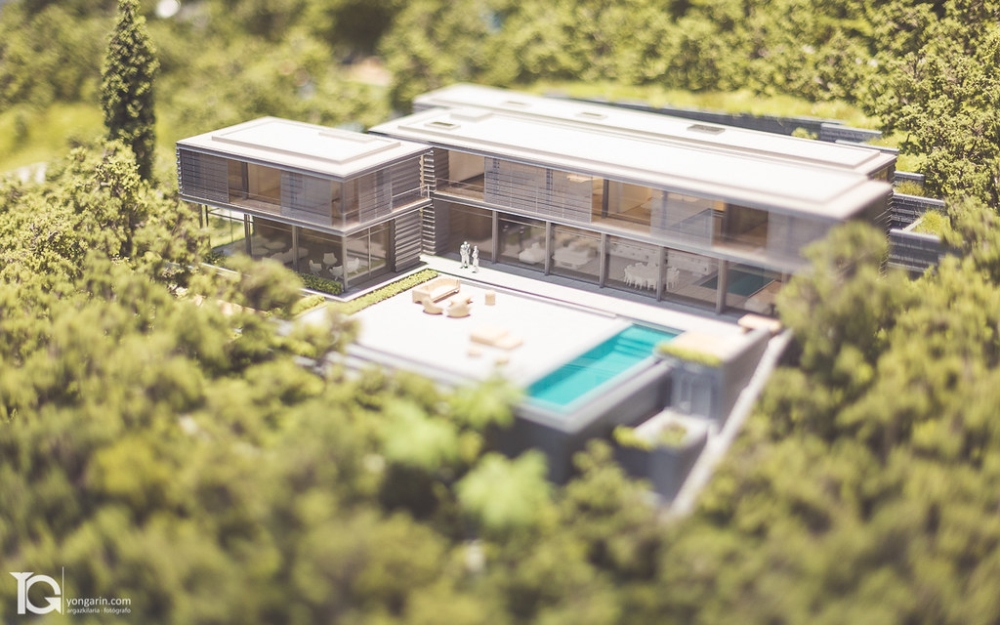
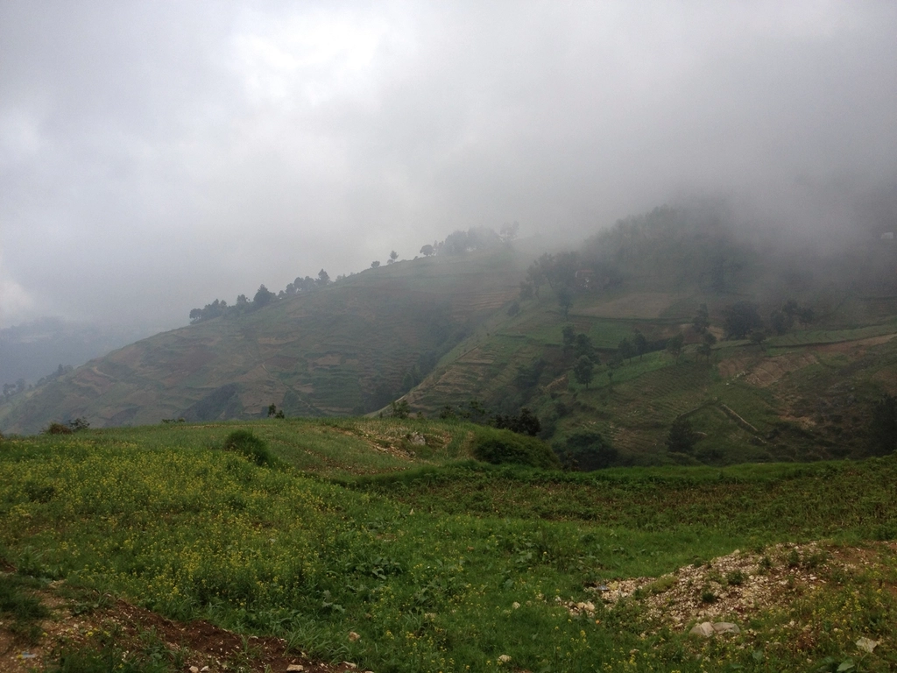

Về Minh An
Kiến trúc sư, người thích ở ngoài khu đất hơn ngồi trước bản vẽ.

Tôi lớn lên ở Huế, trong một ngôi nhà rường có khoảng sân trước trồng ngâu. Có lẽ vì vậy, tôi luôn nghĩ về một ngôi nhà bắt đầu từ khoảng trống ở giữa nó.
Sau khi tốt nghiệp Đại học Kiến trúc TP. Hồ Chí Minh, tôi làm việc bốn năm tại một văn phòng nhỏ ở Kyoto, nơi học được cách đặt một bức tường sao cho bóng của nó đẹp vào buổi chiều.
Năm 2016, tôi mở FORM / SPACE tại Hội An. Studio có năm người, mỗi năm chỉ nhận vài dự án để có thể ở lại khu đất đủ lâu.
Minh An
Kiến trúc sư chủ trì FORM / SPACE, Hội An
Triết lý thiết kế
Công trình là một phần của cảnh quan, không phải vật đặt lên cảnh quan. Cây cũ được giữ lại, dòng nước được để chảy theo đường của nó.
Giữ nguyên địa hình
Hạn chế san lấp. Nhà bậc theo đồng mức thay vì một mặt bằng phẳng.
Con người ở giữa thiên nhiên
Mỗi phòng có ít nhất một cửa nhìn ra cây xanh hoặc bầu trời.
Vật liệu tốt nhất thường đã nằm sẵn ở khu đất: đất đào móng, đá nhặt quanh suối, gỗ từ nhà cũ được tháo dỡ.
Trong bán kính 50 km
Ưu tiên vật liệu và thợ địa phương, giảm vận chuyển và giữ nghề truyền thống.
Để vật liệu già đi
Không sơn phủ kín. Gỗ sẫm dần, đá lên rêu, đất có vết tay thợ.
Ánh sáng tự nhiên là vật liệu xây dựng thứ năm. Tường cong được đặt để hứng và dẫn ánh sáng đi sâu vào nhà.
Vẽ theo đường nắng
Mô phỏng bóng đổ theo từng mùa trước khi chốt vị trí cửa sổ.
Bóng tối cũng cần thiết
Hiên sâu, khe sáng hẹp để giữ mát và tạo nhịp sáng tối trong nhà.
Quy trình thiết kế

-
4 đến 6 tuần
Khảo sát địa hình
Ở lại khu đất qua nhiều thời điểm trong ngày. Đo cao độ, ghi hướng nắng, hướng gió, đường thoát nước mưa. Lấy mẫu đất và đá để thử nghiệm làm tường.
-
6 đến 8 tuần
Phát triển ý tưởng
Phác thảo tay và nặn mô hình đất sét trên mô hình địa hình. Chủ nhà được mời cùng thử nhiều phương án đặt khối nhà, trước khi chọn một hướng đi.
-
10 đến 14 tuần
Thiết kế không gian
Hoàn thiện mặt bằng theo đường đi của ánh sáng, chi tiết hóa vật liệu cùng thợ địa phương và theo dõi thi công tại công trường.